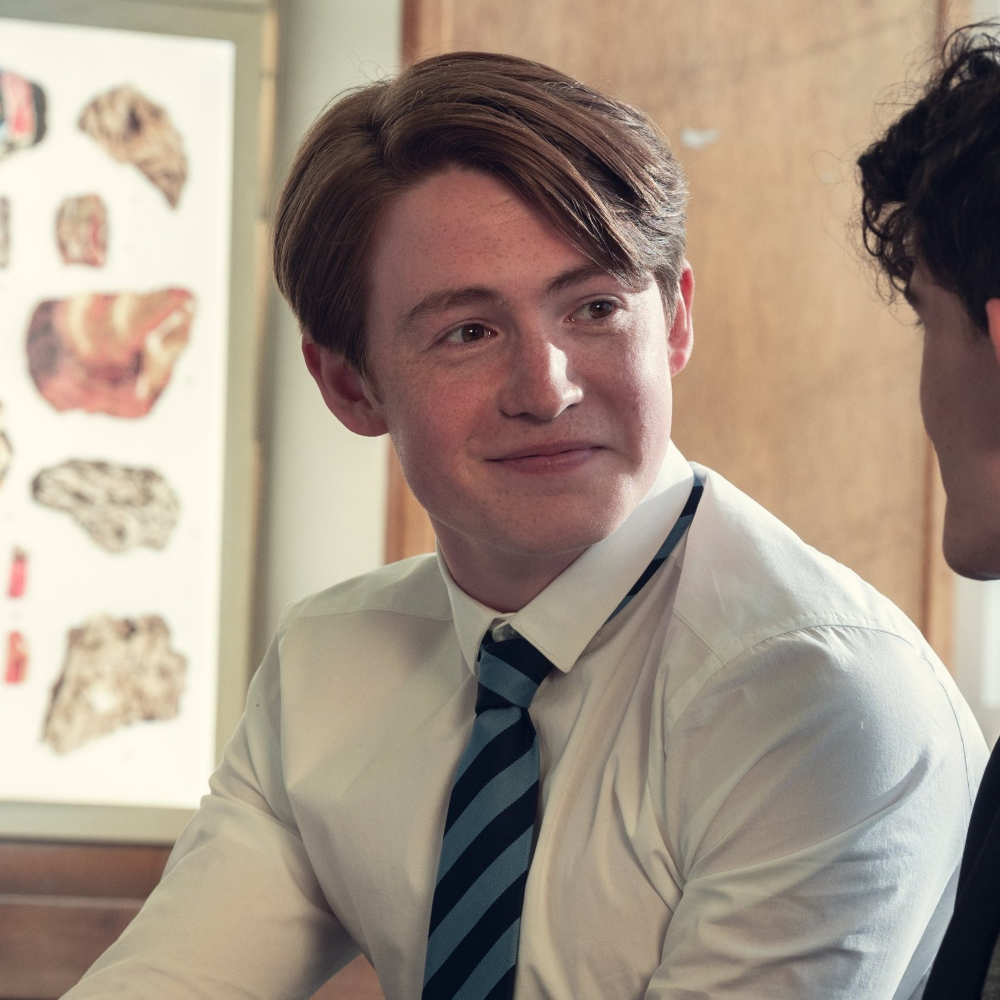
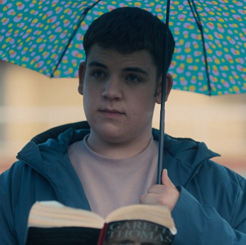

Personagens
Charlie Spring
Charlie Spring, é um jovem de 15 anos que ama tocar bateria, ouvir música e ler histórias de filósofos gregos. Um ano atrás ele sof1reu bullying no colégio, pois seus colegas descobriram que ele era gay. Charlie ainda sofre muito por causa do bullying, porém tenta seguir em frente e superar tudo isso, mesmo sendo dificil. Para sua surpresa, Charlie consegue fazer um novo amigo, Nick Nelson, porém o que ele não esperava era que essa amizada iria evoluir para algo a mais
Nickk Nelson
Nick Nelson, é um jovem de 16 anos que está prestes a entrar no último ano da escola. Sempre foi rodeado de amigos, mas sempre sentia que não podia ser ele mesmo perto deles, apesar disso ele sempre gostou muito de todos os seus amigos. Porém, quando o colégio dicidiu misturar as turmas para realizar a chamada Nick conheceu Charlie. Com o tempo Nick foi se tronando cada vez mais próximo de Charlie, e ele sempre se sentia muito bem perto dele, diferente de como se sentia com seus outros amigos. Apesar de tudo o grande sentimento que ele tem por Charlie o assusta muito, pois Nick nunca imaginou que sentiria algo tão forte assim por outro garoto.
Tao Xu
Tao tem 15 ano, e é o melhor amigo de Charlie. É uma das pessoas mais importantes na vida de Charlie, ficando atrás apenas de Nick. Ele é extremamente protetor com seus amigos e sempre tenta ajudar eles nos seus momentos mais difíceis. Tao sempre foi muito apaixonado pela sua amiga, Elle, porém nunca tomou atitude para confessar seus sentimentos por ela. As vezes Tao sente medo de que seus amigos acabem o abandonando, esse é um dos motivos do por que ele nunca falou para Elle que gostava dela. Tao tem uma personalidade muito forte e por isso pode ser bastante impulsivo, podendo magoar quem ama, mesmo que seja sem querer.
Elle Argent
Elle Argent tem 16 anos e é uma garota trans. Estudou na Truham Grammar School for Boys antes de se assumir. Ela foi transferida para a Harvey Greene Grammar School for Girls após sua transição e bullying de seus colegas no 11º ano. Elle é, em geral, muito doce, atenciosa e amigável. Sua transição a levou a ser intimidada e até mesmo a não poder ver seus familiares no Egito devido às leis homofóbicas de lá. Apesar do trauma que sofreu, Elle é muito criativa e artística, recicla roupas e menciona se candidatar a escolas de arte após se formar. Ela é melhor amiga de Tao e tem um crush secreto nele, ela brinca carinhosamente com sua baixa estatura, referindo-se a ele como "Tao baixinho", apesar de tudo ela fica bastante tímida perto dele devido a paixão que ela sente.
Darcy Olsson
Darcy é uma jovem de 16 anos, que é extremamente caótica e extrovertida, adorando fazer as pessoas ao seu redor rirem, especialmente sua namorada, Tara. Ela é muito animada e adora estar rodeada de seus amigos. Apesar de ser muito feliz, Darcy sofre muito em casa, pois seus pais são horríveis e a tratam mal, por isso ela só se sente confortável perto de Tara e de seus amigos.
Tara Jones
Tara tem 16 anos e é uma jovem muito quieta, calma e observadora. Ela se descobriu lésbica recentemente e isso assustou muito ela, porém sua namorada, Darcy, ajudou Tara a se entender e se aceitar. Diferente de Darcy, Tara tem pais que a apoiam e mora em uma casa muito boa e confortável, por isso ela serve muito de apoio para Darcy. Uma curiosidade sobre Tara é que ela faz balé desde pequena e ama dançar.
Isaac Henderson
Isaac tem 15 anos, e é um leitor ávido introvertido e de bom coração. Em quase todo o tempo, ele está lendo ou estudando. Ele é o terceiro membro do trio de Charlie e Tao, e eles são melhores amigos desde a infância. Por ser introvertido ele acaba não falando muito e se tornando mais um observador, entretanto quando ele decide se expressar, ele usa palavras calmas e reconfortantes para apoiar seus amigos.
Imogen Heaney
A Imogen é uma jovem de 16 anos doce, alegre e extrovertida. Ela é uma das amigas mais próximas de Nick Nelson e a única garota em seu grupo de amigos. Imogen é uma romântica incurável, ansiando pelo afeto de Nick, apesar dele estar visivelmente desconfortável com isso. Apesar de tudo ela se mostra super compreensiva quando Nick revela que não gosta dela da mesma forma. Imogen está tentando achar seus verdadeiros amigos no High School, no meio de tantas pessoas desagradáveis.